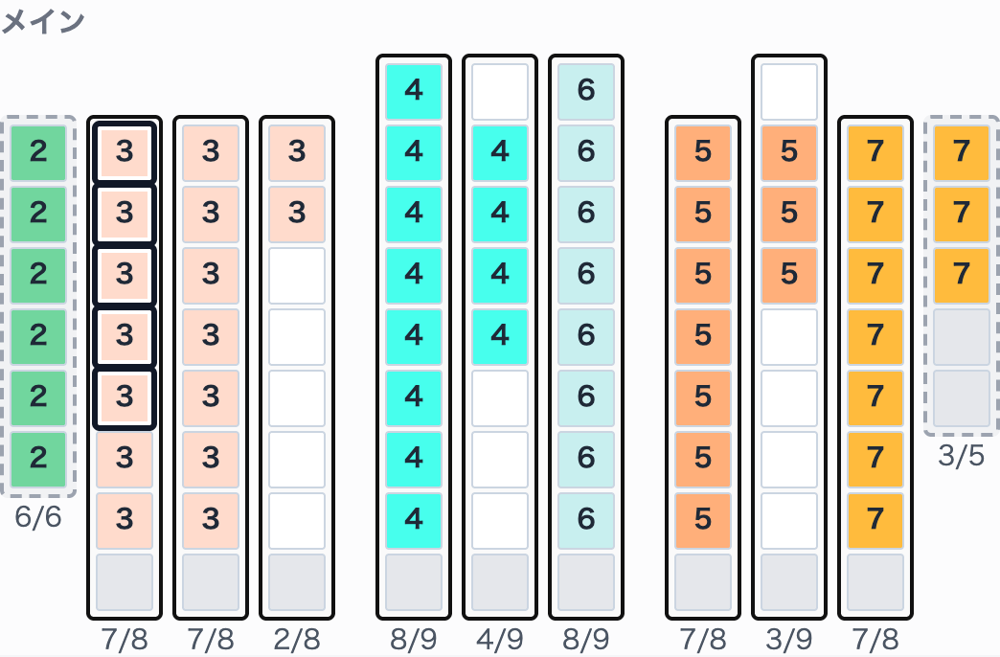
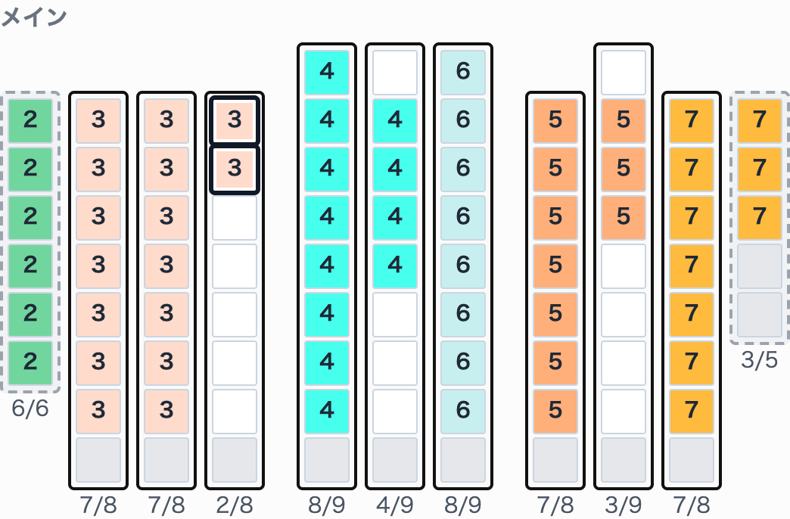

選択・移動はロットごとです。異なるロットを同時に選択できません。 マスの番号はロットを見分けるための番号で、凡例の品名・ロットと対応します。


| 操作 | 方法 |
|---|---|
| 1枚を選ぶ | クリック |
| 同じロットの複数枚を選ぶ | Shift＋クリック、または荷物のない位置から矩形で囲む |
| 1枚を選択から外す | 選択済みのパレットをShift＋クリック |
| 選択をすべて解除する | 荷物のない位置をクリック |
選択したパレットを移動先の列へドラッグします。移動後は選択が解除されるため、次の移動では、もう一度選択します。